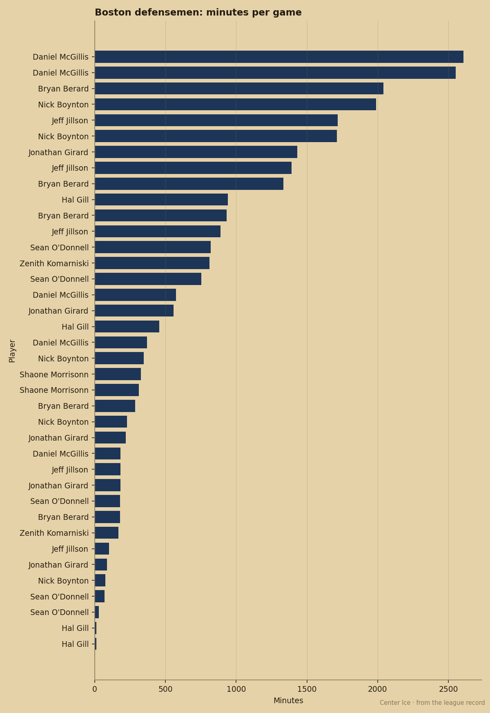
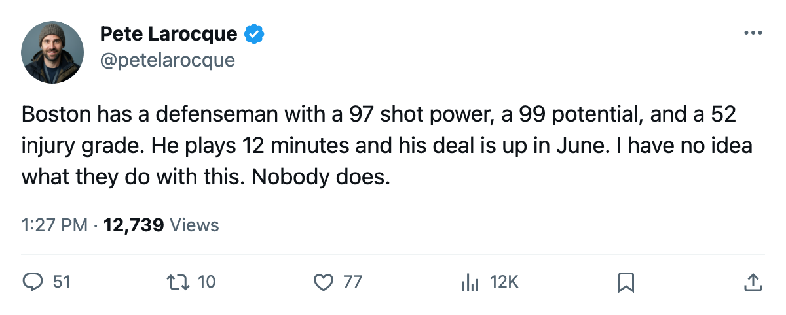

BOS
BOSThe Bureau Says Morrisonn Could Be a 98. It Also Says His Body Is a 52.
Boston's 19th overall pick from 2001 is the third-biggest riser in the league, shoots a 97 shot power, and plays 12.1 minutes with no contract past this year.
 Pete LarocqueScouting editor · The Prospect File
Pete LarocqueScouting editor · The Prospect File
Shaone Morrisonn

Shaone Morrisonn72 is up 11 on the Development Index. That puts him third in the league, behind only  Vaclav Nedorost83 at +12 and
Vaclav Nedorost83 at +12 and  Marian Gaborik99 at +11 (tied). His overall reads 79 today, which is his base grade of 70 plus those 11 points of form. His potential grade in the Book is 99.
Marian Gaborik99 at +11 (tied). His overall reads 79 today, which is his base grade of 70 plus those 11 points of form. His potential grade in the Book is 99.
The Bureau has a 97 shot power on a 22-year-old averaging 12.1 minutes a night in Boston. Pass 88. Puckhandling 86. Speed 84. Balance 82. Toughness 81. Those are the numbers of a top-pairing defenseman in his prime.
Then the body: injury grade 52, fighting 51, hockey IQ (hero) 52. The Bureau prints a 97 shot, a 99 potential, and a 52 body side by side.
Shaone Morrisonn signed for $1.10M. The contract has 0 years left. He turns 23 on December 23, eight days from now. Boston has until June to decide whether the 97 outweighs the 52.
The ice time tells you what Boston thinks
Boston plays  Joe Thornton84 and
Joe Thornton84 and  Sergei Samsonov82 on one side of the ice and builds around them. The top defenseman in ice time is Daniel McGillis, and Morrisonn sits fourth among the club's blueliners at 12.1 minutes a night. He has 8 points in 27 games this season, up from 5 in 31 last year. His 7 assists represent a career-high in a single season.
Sergei Samsonov82 on one side of the ice and builds around them. The top defenseman in ice time is Daniel McGillis, and Morrisonn sits fourth among the club's blueliners at 12.1 minutes a night. He has 8 points in 27 games this season, up from 5 in 31 last year. His 7 assists represent a career-high in a single season.
The Index has him climbing fast. The coaching staff keeps him fourth on the blue line.

What the Bureau actually printed
The attribute spread is unusual. Most defensemen with a high shot power have a middling speed or a lower pass. Morrisonn has 97, 88, 86 and 84 across four attributes that matter most for transition offense. The three grades below 60 are FIGH 51, HERO 52, INJU 52. FIGH and HERO can be coached; INJU cannot.
Morrisonn missed from February through late April last season with an elbow injury. That is the only health event on his record, and it cost him roughly a quarter of the season. The Bureau scored his injury resistance at 52 and kept his potential at 99.
The draft comp that stings
Morrisonn was 19th overall in 2001. Ahead of him:  Rick Nash85 at 1 (potential 95),
Rick Nash85 at 1 (potential 95),  Jason Spezza73 at 2,
Jason Spezza73 at 2,  Alexander Svitov76 at 3 (potential 99),
Alexander Svitov76 at 3 (potential 99),  Stephen Weiss75 at 4 (potential 94),
Stephen Weiss75 at 4 (potential 94),  Stanislav Chistov87 at 5 (potential 95). Behind him at 7: Mike Komisarek81 (potential 91).
Stanislav Chistov87 at 5 (potential 95). Behind him at 7: Mike Komisarek81 (potential 91).
Nash's potential is 95. Chistov's is 95. Komisarek's is 91. Morrisonn's is 99. Among defensemen under 23 in the league, only Steve Eminger82 in Toronto (potential 99) ties him. Boston drafted him 19 spots behind a man they now have on a $1.10M expiring deal.
The 97 shot power is in the book already. What the 52 means is open, whether it is a warning or a death sentence. The Index has him climbing and the contract runs out in June, but nobody at the rink has made the call yet.
